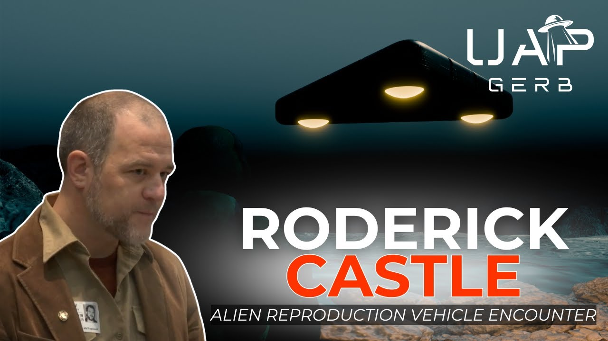

1997 ALIEN REPRODUCTION VEHICLE ENCOUNTER AT 29 PALMS, CA - THE TESTIMONY OF SGT RODERICK CASTLE

Published: 2025-08-17 · Duration: 2:01:49 · Channel: UAP Gerb
Description
Exploring the witness testimony of USMC Sgt Roderick Castle and his harrowing experience during the USMC Hunter Warrior Advanced Warfighting Experiment in Southern California from 02-14 March 1997. While Castle and his fellow VMA-513 Marines were performing overnight AV-8B Harrier crash retrieval duties, the men were sent to investigate "unidentified flare activity".
When rounding a hill near Emerson Dry Lake, the marines encountered an enormous, 200-300 foot, equilateral black triangular craft hovering only 150-200 feet off the ground. Below the triangle, solely 150-200 feet from Castle and the VMA-513 marines, stood a retainer of 30 men and 5-6 tactical vehicles.
The men were outfitted in all black gear and heavily armed with no insignia, name tags, identifiable markings, etc. As soon as the USMC Marines encountered the craft and team in their Humvee, half of the retainer of Black Operators quickly swarmed and detained the Marines at gunpoint, barking orders at the soldiers to keep their heads down under threats of death.
While being detained, Castle observed the triangle dart off towards the Northwest at incomprehensible speeds.... The Triangle featured no visible signs of propulsion and gave off no sounds or identifiable thrust or heat signatures.
Castle reached out to David Grusch in early 2025, prepared to swear his testimony in before Congress.
This project seeks to analyze the who, what, when, where, and why of Castle's encounter and analyze why this incredible, logic-defying triangle is indeed an Alien Reproduction Vehicle (ARV).
Support me on Patreon: https://www.patreon.com/c/UAPGerb Follow me on Twitter: https://x.com/UAPGERB
Previous Work Referenced:
- The 1948 Aztec, New Mexico UFO Crash Retrieval: https://www.youtube.com/watch?v=QJxbyu-9Tj0&t=8378s
-
UFO Legacy Programs - Science Applications International Corporation (SAIC): https://www.youtube.com/watch?v=9p99lTsC7wQ&t=7673s
-
1997 Peru UFO Crash Retrieval - the Story of Jonathan Weygandt: https://www.youtube.com/watch?v=7Jc2G5aEH0A&t=6915s
-
US Navy UFO Crash Retrieval & Reverse Engineering Programs: https://www.youtube.com/watch?v=H9GSqOEvoBE
- UAP Reverse Engineering at Edwards Air Force Base [Redacted List Vol.2]: https://www.youtube.com/watch?v=U_LSMLGBDNg&t=22s
-
Alien Reproduction Vehicle - TR-3B and the Flying Triangles: https://www.youtube.com/watch?v=B7JP0uX0GwY&t=113s
- Alien Reproduction Vehicle - the Testimony of Mark McCandlish: https://www.youtube.com/watch?v=wF07QMm6joE&t=56s
-
Michael Herrera - Insights into UAP Encounter and Black Program Insiders: https://www.youtube.com/watch?v=4EMO38JUfVE&t=1368s
UAP GERB ACRONYM LIST: https://drive.google.com/file/d/1riL6jgIKqCWmHW7AdZZEb9qlAAjyrBVY/view?usp=sharing
0:00 INTRO 10:43 R.J. CASTLE 16:55 CASTLE'S TESTIMONY 45:18 HUNTER WARRIOR & ARV SMUS 1:34:00 WACKENHUT 1:44:19 CONCLUSION
ufo #uap #uapnukes #uapdisclosure #ufology #ufonews #ufosightings #uapsightings #ufofootage #uapfootage #hynek #condoncomittee #Jallenhynek #projectsign #projectgrudge #projectbluebook #bluebook #ufocongress #SOL #solfoundation #karlnell #Battelle #UFOreverseengineering #lockheed #skunkworks #lockheedmartin #rosscoulthart #fastwalker #blackvault #slowwalker #kingman #ufocrash #nickredfern #Grusch #michaelherrera #USO #TimothyGallaudet #mystery #mysteries #unexplained #extraterrestrial #space #technology #greer #kecksburg #kecksburgUFO #nasa #edwards #usaf #elizondo #McCandlish #immaculateconstellation #rosscoulthart #edgarfouche #tr3b #arv #DUGWAY #navy #Weygandt #SAIC #aztec #flyingsaucer
Transcript
Show transcript
We maintained our jets and we did emergency duty, you know, on 12-hour shifts. Me and my guys, we were overnight, so we were 7pm to 7am. And a routine night, it's hot out there, we're just hanging out near the Humvee, probably in chairs or hanging out in the back. We get a call on the radio that there's, you know, either unexplained or unauthorized something about flare activity in the desert. You know, maybe four, three to four miles out, maybe five. We come over a hill, we're yanking the trailer behind us, you know, maybe driving 30-35 miles an hour. We come over a hill and all five of us see it. It is a black, from that angle, equilateral triangle, meaning all sides the same, with three white yellowish orbs in each corner. And possibly some kind of venting on the sides, but definitely rounded on the edges, not pointy. That was there hanging in the sky. I say hanging because there was enough wind for something even, you know, I know aerodynamics, something that if it was thin enough, maybe it could hover slightly. So this is what it would look like if you were looking straight up at it. Of course, that's not the angle, it was more, you know, I don't want to use that. A soup bowl going forward with no light emitting from here, yellow, yellowish, whiteish, or kind of like a ball sphere had been embedded into the underside. Accompanying it, we're about 30 military-type dudes with black uniforms and five to six can't remember exactly vehicles. Look like F-150s, F-350s, the big trucks jacked up all black, all matte, some with canopies, some with antennas. This is all coming in a flash, right? Within 30 seconds of coming down this hill. The minute we came up over about half of them, maybe 15 came running up the hill towards us, V-formations with guns. Yeah, right up harsh language. Get your fing heads down, get your fing heads down. Get your fing heads down. You know, not shooting. But looking like they're ready to. You know, very close to our heads as if they didn't want us to look at anything. We felt, my initial reaction was we fed up, found something that we shouldn't be involved in and I'm just going to comply because I'm scared. On this channel, I investigate UFO whistleblowers, UFO crash retrieval cases, and UFO legacy program operations that exist somewhere between elements of the United States Department of Defense, intelligence communities, colossal defense contractors, and semi-private R&D experts called Federally-funded research and development centers. One of my personal favorite topics to study is the concept of alien reproduction vehicles. Human-made aerospace vehicles that range from replicas of non-human craft to prosaic airframes and designs employing one or more aspects of non-human technologies. The term ARV was coined by the now infamous Brad S, an industrial designer who witnessed three man-made flying saucer vehicles called quote-unquote flux liners at a classified section of the 1988 Norton Air Force Base Air Show, which were described as copycat vehicles employing highly exotic propulsion systems and craft designs, while still featuring F-4 Phantom jump seats and sloped-on paint. As recently as 2024, whistleblower Matthew Brown proposed the Immaculate Constellation Reports, which detailed a special access program targeted with performing data acquisition of video, satellite imagery, etc., on UFOs and quote-unquote reproduction vehicles. Such cases involved reproduction vehicles detailed as silent, enormous black triangles observed by U.S. Indo-Paccom, or U.S. Indo-Pacific Command. I have discussed numerous cases surrounding alien reproduction vehicles, including the ever-complex and awe-inspiring flux liner, the whistleblower testimony of Ed, who served as an electronics warfare detector at the Edwards 412 test wing, where he claimed he served as the mediary between scientists and test pilots of reverse-engineered UFO craft. And I have devoted an entire documentary to exploring man-made reproduction vehicle triangular craft. In this project in question, I argued why I believe many, perhaps not all, but many triangular UFO sightings are in fact man-made vehicles that harness exotic technologies and concepts. Specific craft covered were seemingly prototype iterations of triangles with varying features seen worldwide from the 1970s to 1990s. Crescendoing in the 1989 Belgian Triangle UFO wave, as well as the XF-131 Super Sentinel, which famously made its way onto the X-Files Season 1, Episode 1. This is a photo of a UFO that reportedly crashed in Roswell, New Mexico in 1947. Now, I know you don't believe that story, but just hear me out. Now, Ellen's air base, the same base that we're at right now, the same base that for some strange reason doesn't appear on your U.S. government map, is supposedly one of the six sites where parts from the wreckage were shipped. Mulder, are you suggesting that the military is flying UFOs? No. Planes built using UFO technology. After forensic artist Bill McDonald drew the copycat vehicle in a Denny's in Antelope Valley in 1992. Based upon the first-hand testimony from four engineers, two from Lockheed out of the Hellendale radar cross-section plans and two from Northrop Grumman out of the Tejon radar cross-section plans. The most famous mention of reverse-engineered craft came from Air Force Master Sergeant Edgar Fouchet, who detailed the TR Tactical Reconnaissance 3B. The pride of U.S. Aerospace, whose propulsion system was reverse-engineered by Sandia in Lawrence Livermore National Labs. Two federally funded research and development centers, whose pilots hailed from the U.S. Navy and Edwards 412 Test Wing, whose engineering was performed by Lockheed, Boeing, Northrop, Teledyne Ryan, and whose program was managed by three of six of the U.S. Big Six intelligence agencies, the NRO, NSA, and CIA. But today, I am thrilled to announce I have sat down with a first-hand UFO witness who since he first approached David Grush in early 2025 is dead set on swearing his testimony before Congress. A former U.S. Marine whose testimony ties into this entire long-winded intro as well as other whistleblower testimonies I have covered, specifically Ed from the Edwards 412 Test Wing and U.S. Marines Jonathan Waganth and Michael Herrera. Meet Roderick Castle III, a veteran and sergeant in the U.S. Marine Corps from 1994 to 1999, who now works with veterans suffering from PTSD. Castle served with the VMA-513, the Flying Nightmares, an AV-8B Harrier Squadron stationed out of MCAS Yuma, Arizona, leading a team of six to eight Marines in aviation ordinance while also training as a helicopter flight medic. I have recorded an entire interview with Castle detailing his harrowing experience of what I wager is a triangular ARV, an accompanying black operation's unacknowledged Special Mission Unit encountered a little too close for comfort here in the continental United States. Viewers of my channel know me and know who I am, so a week before the interview with Castle releases, we will today exhaustively explore his testimony in place the who, what, when, where, and why to his harrowing encounter. To some, Castle's testimony may seem simple and quite similar to that of Waganth and Herrera. While on duty, a Marine encounters an all-black team with advanced gear and weaponry, featuring no insignia or identification, there might be a craft-defying all-logic hovering motionless nearby seemingly operated by humans, but the Marine is forcibly detained, threatened, and met with reprisals. But to me, Castle's brief but powerful testimony offers us an unparalleled look into U.S. legacy program operations, how these UFO paramilitary groups operate alongside other blue, a.k.a. friendly assets, and a greater understanding that the U.S. does indeed employ triangular craft that can defy all logic for clandestine aerospace applications. So please look at this video as a part one of two, the investigation of Castle should not be viewed without the interview of Castle. With all that out of the way, let's dive in, but last thing here, I know some viewers of my work can get tripped up with so many uses of acronyms. So guys, today we are diving into military programs, so please expect a tremendous amount of acronyms. I will try to relist all acronyms used in the video description, so please reference there if you get tripped up, but with that out of the way, let's begin. Roderick John Castle III entered into service at the United States Marine Corps in 1994, and by his retirement, Castle earned the rank of Sergeant, or an E-5. Castle's primary MOS, or Military Occupational Specialty, was a 6531. Her aircraft ordinance technician, Castle served at the MAG-13, or Marine Aircraft Control Group 13, of the 3D MAW, or Third Marine Aircraft Wing, stationed at MCAS Marine Corps Air Station, Yuma, and yes, I know, we're already getting into the acronyms. Now real fast, I previously discussed Yuma Proving Ground, or US Army MRTFB, or Major Range and Test Facility Base in regards to UFO Legacy Program Operations. 23 US MRTFBs exist, 8 Army, 6 Navy, 7 Air Force, and 2 Defense Agency. These include Edwards 412 Test Wing, NAWC Patuxent River, and the Atlantic Undersea Test and Evaluation Command, Fort Wachuka, and the West Desert Test Center, and more. One of my prevailing and prominent theories regarding UFO Legacy Programs is the usage of these critical core MRTFBs for UFO research, development, tests, and evaluation. This includes everything from craft storage, accompanying deep underground military bases beneath MRTFBs, and utilization of restricted airspace for test flight of recovered or reverse engineered craft. MCAS, out of which CASEL operated, is not part of Yuma Proving Ground, therefore it is not part of the MRTFB. In fact, while CASEL's experience involved a coordinated US Marine Corps experiment, I wager the USMC is quite unlikely to run and operate UFO Legacy Program Operations, and keep this in mind as we progress in our investigation. While I can present ample testimony, evidence, files, and research that the US Army, Air Force, and Navy operate siloed UFO Legacy Programs in conjunction with the US Big Six Intelligence Agencies, I can find no such evidence even suggesting USMC engages with the UFO portfolio. CASEL served with the VMA-513, nicknamed the Flying Nightmares, a USMC attack squadron known for use of its AV-8B Harrier jets. And towards the tail end of its service trained as a helicopter flight medic. Harriers are fascinating pieces of technology. These intriguing craft are known as VTOL, Vertical Takeoff and Landing Jets, while the AV-8B Harriers are known as STOVL, Short Takeoff and Vertical Landing, meaning that Harriers require little to no runway to take off and can actually land vertically. And this means Harrier jets can stand still and hover in the air, thanks to their Rolls-Royce Pegasus engines equipped with four rotating nozzles that can direct engine thrust quite the sight for an attack jet. But I mention this due to CASEL's familiarity with both Harrier jets and helicopters. He was well accustomed to VTOL and STOVL technology, helicopter morphology, and Harrier standstill flight vectoring and dynamics. In 1997, CASEL would take part in the Hunter Warrior Advanced Warfighting Experiment, a 12-day experiment that ran from the 2nd of May 1997 to 14 May 1997 in Southern California out of the Marine Corps Air Ground Combat Center 29 Palms. The Hunter Warrior Advanced Warfighting Experiment was at the time the largest experiment to date by the newly renamed Marine Corps Warfighting Laboratory, which explored methods to increase the area of influence and combat effectiveness of Marine units by utilizing a variety of experimental equipment and new warfighting tactics and techniques. The Hunter Warrior Experiment operated with three primary objectives. One, quote, The first objective area covers tactical operations on the dispersed, non-contiguous battlefield. How small units perform against a numerically superior force on a battlefield that has no front, flank, or rear areas, and is key component of this objective, end quote. Two, quote, The second area is command control communication computers and intelligence, and the single battle concept. Creating and using a shared digital communications network will be crucial in many different areas. Experiments in C4I examine the digital network in information sharing, end quote. And finally, three, quote, The third objective is enhancing fire support and improving targeting to dominate the broad dispersed battlefield of the future, effective and efficient use of all indirect fire is absolutely necessary, end quote. During Hunter Warrior's Advanced Warfighting Experiment's operations, and within Hunter Warrior's AO, or area of operations, is where CASEL's experience took place. Now, if you recall in 2023, Jeremy Corbell released a video of a supposed triangle UFO over 29 palms. Arguments persist to this day if the video depicts a craft or a group of flares, but that and 29 palms are not relevant to our investigation today. Indeed, I believe many studying CASEL's testimony would look for evidence of UFO Legacy Program operations out of 29 palms Marine Station, but I vehemently disagree. I believe that by studying the Hunter Warrior Advanced Warfighting Experiment, we can truly gain unparalleled insights into UFO Legacy Program's conduct, testing, and training missions on U.S. soil. Hang tight because after we detail CASEL's encounter, we will spend a significant amount of time exploring the 1997 Hunter Warrior Experiment. We maintained our jets and we did emergency duty on 12-hour shifts. Me and my guys, we were overnight, so we were 7 p.m. to 7 a.m. And a routine night, it's hot out there, we're just hanging out near the Humvee, probably in chairs or hanging out in the back. We get a call on the radio that there's either unexplained or unauthorized something about flare activity in the desert. Maybe 3 to 4 miles out, maybe 5. This is the part that gets a little sketchy, but I've tried to find it on maps. We come over a hill or yank in the trailer behind us, maybe driving 30-35 miles an hour. We come over a hill and all five of us see it. It is a black, from that angle, equilateral triangle, meaning all sides the same, with three white yellowish orbs in each corner. And possibly some kind of venting on the sides, but definitely rounded on the edges, not pointy. That was there hanging in the sky. So accompanying it were about 30, 30 military-type dudes with black uniforms. And 5 to 6 can't remember exactly vehicles. It looked like F-150s, F-350s, the big trucks, jacked up, all black, all matte. Some with canopies, some with antennas. This is all coming in a flash, right? Within 30 seconds of coming down this hill. Enough to notice that the thing was hanging there. Enough to notice it was slightly turning counterclockwise. Perhaps there was some indentation in the center, maybe some type of striation or venting on the side, but these are impressions that I've had to find and integrate with that initial shock and awe of seeing something like this. During the 2nd of March 1997 to the 14th of March 1997, Roderick Castle with his team of 5 to 6 other Marines and the VMA 513 flying nightmares engaged in the Hunter Warrior Advanced Warfighting experiment out of the Marine Corps Air Ground Combat Center in 29 Palms, located in the Southern California desert. Castle and his fellow team operated attached to an experimental Special Purpose Marine Air Ground Task Force. Ironically to this channel, Castle and his fellow Marines participated in the experiment as a Harrier jet crash retrieval team. One night during the 12 day operation, Castle and his team were engaged in overnight crash retrieval duties for Harriers. The Marines were sent in to investigate unidentified flare activity. As you will see in our interview, Castle and I have worked hard to trace almost exactly where this incident took place to reduce as much ambiguity and questions as possible. Our incident occurred within a 7.5 mile radius of Emerson Dry Lakebed, northwest of 29 Palms in about 90 miles southeast of Edwards Air Force Base in the Antelope Valley. If you know my work, my bet you can already guess where we will be going in our investigation. Castle and his Marines came over a hill heading northwest in this area and we can find multiple dirt roads with varying terrain near the Emerson Dry Lakebed. According to the Federal Aviation Administration's special use of airspace, this event occurred within R2501C. I strongly recommend committing this piece of airspace to memory as regular old boring discussion of air traffic organizational policy and restricted pieces of airspace will become paramount to our investigation. So this is what it would look like if you were looking straight up at it. Of course, that's not the angle. If it's more, you know, I want to use that. So you only saw the underside of this, right? Yeah. You cannot speak to what the top would like. I'm going to do this faintly because there's perhaps convex, right? Going inward. Is that what I said before? Or concave. Concave, yes. Same. A soup bowl going forward, but no light emitting from here, but a yellow, a yellowish, whiteish or kind of light. You know, nothing crazy, like psychedelic or but definitely like a ball, a sphere had been embedded into the underside. And that's important you say that, right? It's not just like a flush LED light. It's not like spheres embedded into each corner. Yeah, and the light was deeper than an incandescent or an LED. One of the things you told me when we were talking and this, the light cast, didn't cast onto the ground or the team or anything. The light wasn't cast. You know, not completely non-reflective, which it would be, you know, invisible basically, but all this aspect, very black, blocking out the sky and the stars. You get that deep dark blue in the desert sometimes. The moon was not, I don't know where the moon was that night. It must have been over one of the hills. Coming over the hill in a Humvee, carrying fire suppression equipment, the Marines encountered an enormous, equilateral triangular craft that measured approximately 300 feet in length, hovering silently 150 to 200 feet in the air. The craft emitted no detectable sound, featured no exhaust ports, bolts, seams, or rivets. An unlike a Harrier or helicopter sat stationless in the air, no wobbling, bobbling, or weaving, and featured no exhaust signs like one would see from a Harrier's VTOL thrust engines. The ominous vehicle was matte black or darker with no observable reflectivity and featured three lights at each corner, bright lights, but not blinding. The lights were a combination of yellow, white, and gold, but oddly cast no shadow onto the ground. Below the craft, an estimated 150 to 200 feet away from the castle were unmarked black tactical vehicles and an accompanying unit of approximately 30 armed men in unmarked black uniforms. Like the stories of Wagan and Herrera, these men bore no insignia, identifiable markings, flags, or name tags, and the operators all spoke with American dialects. The vehicles seemed to be all Ford F-150 to F-350 types with all black canopies. Some featured antennae on top of the canopy, but all vehicles were all black. No logos, symbols, chrome, or metallic reflections were visible off of any of the automobiles. Despite Castle and his fellow VMA-513 Marines operating in uniform with authority on U.S. soil, half of the unmarked operators intercepted the Marines at gunpoint. The Marines were disarmed, held at gunpoint, and threatened and ordered to stay silent. You know, so we're alert, but we're, you know, we're, of course, tired, but we don't have night vision stuff. This is low-tech, you know, we're Marines and we've been through combat training, but we're glorified mechanics, so we know we're technicians. So there's a handful of tactical vehicles, all black, and a team of about 30. What was the team doing? Not enough time to even evaluate that, because the minute we came up over about half of them, maybe 15, came running up the hill towards us, and V formations with guns. What were they armed with? Subtype of, like, subtype machine gun. I'm not a guy who knows all the guns, but I did, I am an artist, and I have found a way to use AI to help me with this process. I did send you a picture at one point, and maybe that could be shown. That's exactly what they look like. Other than maybe, you know, my picture ends up with a Caucasian skin tone at the top. Not necessarily the case, but that's the only place any type of skin for any of these men might have been shown. We'll show it on screen, because of course we're working with that 3D artist to recreate the scene, and to your specific specifications. So you're saying all black army helmets, sometimes goggles, black, what looks almost like a ski mask, black fatigues, black tactical gear, submachine gun. Yeah, like, you know, classic black clad mercenary type. You know, again, I'm an artist, so I'm going to see things through a lens, sometimes through art and movies and comics, and these were, if you want to, you want to drop some evil villains and, you know, black clad mercenaries, this is what these guys look like. Yeah, right up harsh language. Get your ass down, get your ass down. Get your ass down. You know, not shooting, but looking like they're ready to. You know, very close to our heads, as if they didn't want us to look at anything. We felt, my initial reaction was, we f***ed up, we came upon something that we shouldn't be involved in, and I'm just going to comply, because I'm scared. You know, like again, we're Marines, we're technicians, and our M16s are in the back of the truck, you know, in Iraq. Right. You guys are there for our suppression. Not even loaded. We don't have magazines on it. We're carrying two bells. Because you were, you know, for the exercise, harrier, crash or triple duty if needed. You're not there to be armed or station. No, no, you know, we fight if we need to fight, but that's not our primary job. So these guys are harsh language head down, they don't want you to see anything. So, and keep in mind this whole thing, max four minutes, maybe three. That's what I want people to know too, is this was, this is a flash, adrenaline filled witness event. You know, this is something I came across accidentally. And I see it now as some very positive, mostly positive thing, that, you know, it opened up some, some avenues for me, but as far as thinking, but something I probably would have, if things hadn't changed, maybe, you know, in the last two, three years, with the energy about this subject, the stigma I probably would have just taken to my grave. You know, maybe told stories to excite, you know, my grandkids or something. Oh, Grandpa Roder's talking about that black triangle again. That was the first demands, you know, out of the vehicle. Out of the, out, out, out, out. Minimum language, which tells you they mean business. And I don't know how else to say it, but anybody that's been there knows what it feels like when you know for certain, this guy's probably this close from shooting you in the head. It's a feeling, it's a real thing that all the acid in your stomach just floods you, you know, you're flood, you're ready to die. Yeah. So, this was all happening at the same time, in multiple ways, because we all are affected by that trauma differently. So me, I might freeze, because I'm starting to conceptualize the whole situation. My other guy might get aggressive. Another guy might run. Did these guys, did they have any insignia, any name tags, any claims? No, no, it's like completely black. On purpose, obvious. You know, every truck was painted matte black. But they spoke with American dialect, right? The few that I could, that I heard. The Puss Watson. And they were very, they knew what they were doing, because they knew certain guys talk, certain guys don't, the rest, keep their mouth shut. So I know that your number one concern was for your life and the life of your fellow Marines. Could you tell what the rest of the convoy was doing, what the trucks were doing, what the Triangle was doing during this time? You know, of course, I've gone over this in my head a billion times. I got my, my kind of theories, but I'm not stuck on anything. It felt more like they were there with it. It's some kind of overwatch. Maybe it was, why I was hovering right there, I don't know. After approximately two minutes, since first observing the craft, and whilst being detained by the operators, the Triangle ceased its slow rotation counterclockwise, climbed at an angle and darted to the Northwest at an extremely high rate of speed. And remember that direction. But again, this craft took off with no visible auditory or optical signs of propulsion or thrust. I did see it zoom to the Northwest, which is the direction, the general direction of the road at a very high rate of speed. Again, no, no noise, no exhaust, nothing. Just slow descent. So it, it rose up a little bit and then just darted? Yeah, like at an angle, at an angle. Did it curve or did it seem like the, the craft would be parallel to the ground? No, yes. That's important, you know. Staying, staying like this. So it didn't turn at an angle, just rose up? Yeah, like it's on some kind of, it needs to stay that direction. Did it seem like there was visible acceleration or did this just? At first it was like a, like maybe a slow buildup, that angle, and then when it hit that, to nothing. Wow. Like a very tiny light to nothing, but you know. And that's what resonates with other reports I've heard. It's just this rapid, rapid acceleration. The craft disappeared almost instantaneously and quickly. The black operators sprinted back down the hill, boarded their tactical vehicles and drove off to the northwest at a high rate of speed. In a state of psychological shock, the men tried and failed to start their humvees. The vehicles remained inoperable for several minutes. They, they seem surprised as we were, but they were ready. Cause that's what they do. That was the sense they're doing their job. The minutes the thing was gone. They've run back down the hill, back to their vehicles. They take off down that road. Same direction as a craft. We pick ourselves up. We're the only best way I can explain is state of shock after a car accident or something. The one younger guy who was, you know, always, the one that talked the most, you know, he said, you know, what's. You know, I remember that distinctly. It's like those first few moments after a car crash, that something gets embedded. Um, got back in the vehicle, attempted to turn the humvee on. It would not start at first. Um, relatively rare. Um, you know, you got a, just a side switch to diesel engine. Pretty reliable. It took maybe five minutes to get it going and try it every minute. I am reminded here of Dr. Kevin Knuth at the 2023 Soul Foundation, where he discussed vehicle malfunctions in the presence of UFOs. You might recall the scene from Close Encounters of the Third Kind, where Richard Dreyfus is in his truck investigating power outages and the UFO flies over his truck and the truck stops running. Um, McCamble in 1983 had identified several automobile interference types. You get engine disruption and failure. The engines sometimes fail to restart in the vicinity of a UFO. And when the UFO leaves, sometimes the engine restarts. When I saw that in the movie, I was like, oh, this is just silly at this point. Oh, just restart. You can't just, how is the UFO magically restarting the engine? Um, well, if you think about the physics, you can reason through this. And this is what McCamble had done. If you have a strong enough electric field around this UFO, you could possibly be ionizing the air. How strong is this field got to be? It's got to be on the order of three times ten to the six volts per meter. That'll short out the spark plugs in the car. It'll short out the distributor cam so the car will stop running. But this also brings up an interesting point. If the VMA-513 Marines experienced vehicle failure, this would imply the black operators and their ground tactical vehicles were equipped with countermeasures, maybe similar to something like a Faraday cage to deflect the electromagnetic interference produced by the triangle, arriving back to their quonset hut. The Marines were greeted by their gunnery sergeant and a warrant officer. The commanding officers checked on the Marines, asked them about their mission and what they saw, and reminded the men whatever they encountered was just simple flares, and to not tell others. Um, we drive back to base our shift. This was like two, three. We finished our shift just by standing by again. Not a lot of talking. Back to our quonset huts. By 7 a.m., our gunnery sergeant and our chief warrant officer was hanging out in our quonset hut, which is strange. Marines don't do things with a lot of words. They do things by presence and implying something. Seems like they were checking in on us. We already knew what it was about, but it's just like some flair activity out there, guys. Yes, sir. Yes, sir. It was implied we knew what they were saying. This is flares. You guys stumble across something. You shouldn't have seen, but no big deal. Now, it is my opinion the warrant officer and gunnery sergeant were not briefed on the incident, the triangle or the black team. And this is because of the way USAP or unacknowledged special access programs are conducted, which I do believe, in fact, Castle encountered. Therefore, these commanding officers would not have a need to know about the triangle or the operation. Therefore, I think it is highly likely bordering on absolute certainty. The commanding officers were informed Marines in their command had encountered USAP operations and sensitive materials and were to remind their Marines to retain absolute silence about their encounter. Now, one of the most intriguing pieces here is the day following the incident, Castle was subject to an anthrax booster. Castle had, shortly before Hunter Warrior, already received a booster for his already taken anthrax vaccine, so why another immediately after the counter? Indeed, DOD mandates for all US military personnel to vaccinate against anthrax did not go effect until December 1997 and from the Gulf War in 1991 up to 1997, only some troops, if necessary, were given the anthrax vaccines and boosters. The following day, we were called to medical and given an anthrax booster, they called it. Now, as far as we knew, we had already been given the anthrax vaccine, maybe a year prior. Right. It was always controversial, but we did it because we were told and in those days, there was a lot of grumbling among the Marines and there was usually a guy with a rifle near the medical area where they're giving the anthrax, sometimes people would talk. So it doesn't feel like a suggestion you take? Yeah, again, a Marine thing, a suggestion that we're all taking this and keep your mouth shut. Had you already received like a booster? Because I know that, like you said, the anthrax vaccine was already controversial. I know that for some servicemen, it was forced if they were overseas, the Middle East and later on. That's my question. It wasn't like we were getting ready to go somewhere where there had been a scare or something. It was just me and those guys. So again, it's hard not to get, but it was us and there was a guy with a rifle and we signed something like we did before. First time we signed the, took the anthrax vaccine, all of us signed something from what I remember. So after you take the booster, did anyone ever come up to you and tell you do not talk about what you saw after the Warren officer as well speaking to you? Were you ever forced to sign anything regarding the incident or just... Not about that. Nothing specific. Implied, implied. It's a general feel that Marines will keep their mouth shut if told, which is generally true. Now, of course, if it was just Castle here, I wouldn't be surprised. But knowing two other Marines with similar stories, of course, I asked. And to my surprise, I learned that both Michael Herrera and Jonathan Weygant stated they were subject to anthrax boosters immediately after encountering. In Weygant's case, a team of black operators and a crashed non-human UFO. And in Michael's case, a team of black operators and an enormous 300 foot diameter, eight-gone alien reproduction vehicle. Perhaps it really is too conspiratorial to think what could have possibly been the purpose of this anthrax booster, but it is a data point we simply cannot ignore. Following his exit from the Marine Corps, Castle attempted to push the encounter from his mind while also dealing with the psychological trauma of being detained at gunpoint by American operators on US soil. By 2002, Castle had an additional bizarre experience that may possibly relate to UFO legacy program operations. Wackenhut, now called G4S Solutions, is a prominent private security firm founded in 1954 that is synonymous with UFO legacy programs. I have spoken about Wackenhut previously as the trainers to Department of Energy Special Response Teams, or SRTs, which may have comprised the operators that detained and interrogated Jonathan Weygant in the jungles of northern Peru in late March, early April, 1997. I have also discussed Wackenhut's infamous board member, CIA Deputy Director, NSA Director, Vice Director of the Defense Intelligence Agency, Director of National Intelligence, Director of the National Underwater Reconnaissance Office, Bobby Ray Inman. I have discussed Inman in numerous projects, so I recommend checking out any of these videos. It's only become more significant now once I started doing some research and realizing possible sources of those type of mercenaries that do that work. And a combination of my Marine Brothers, Herrera, Weygant, hearing their stories and being like, finally there was a triangle, enough information that I could start digging locations, contracts, government contracts back in the 90s in the term, not the term, the company Wackenhut kept coming up. And then I remember I was recruited, not a recruit, I received a letter of an event, a recruiting event by them. When I first got out of the reserves, the New York Army National Guard in 2002. And it was within three months of me getting out. At the time I figured I'm just on a list of veterans, however they got that, they were data mining and they got my email. But thinking back now, knowing what I know about Wackenhut, it may have been an attempt, if nothing else it was an attempt to pull me in as an asset. Because I did work on, they were looking for people that worked on helicopters. They didn't specifically say ordnance, they did say experience with the UH-1 Huey and the AH-1 Cobra's, Super Cobra's, which I knew enough about that I could work on them. But that's interesting because you were just training as a helicopter flight medic, that wasn't your MOS, your MOS was? I'd left the ordnance behind at the New York Air National Guard at Syracuse. So they knew something about you, if they knew that you were actively training as a helicopter flight medic. In 2002, three years after he left service, Castle was approached out of the blue by Wackenhut to join their helicopter teams. Wackenhut seemingly knew all about Castle's military service record in training as a helicopter flight medic. But why discuss this, and why is Wackenhut important to mention, and what significance can we find in Wackenhut attempting to contract a Marine Corps Sergeant, who seemed to observe clandestine UFO legacy program operations? Well, aside from the possible involvement with the DOE NEST, or Nuclear Emergency Response Teams, that brutalized Waygant and having Inman serve on their board of directors, Wackenhut is one of the most infamous and prolific private security agencies associated with UFO legacy program operations. Wackenhut has both been implicated with performing security for UFO legacy program sites, or in Waygant's case, possibly involved with clandestine UFO crash retrieval operations. We mention Wackenhut only ever so briefly now, but please keep them in your mind for later for much more investigation, and the possibility that the team Castle observed was a Wackenhut trained and manned DOE SRT. Wackenhut historically provided professional security, especially perimeter security for many U.S. and DOE installations, and these include the Nevada Test Site and ever-elusive Groom Lake Area 51. Famously, Wackenhut worked perimeter security for Area 51 and caught Bob Lazar and his friends who attempted to camp out on Bureau of Land Management Lands overlooking Dreamland to observe test flights of the sports model UFO, quite an interesting little piece of UFO lore here. Now, let's finally analyze Castle's testimony in its entirety to transform a firsthand UFO encounter into what I propose is a unique glimpse into UFO legacy program operations. Castle's sighting of the Triangle and its operational ground team occurred within the area of operations of Marine Corps Air Ground Combat Center 29 Palms. During the 2nd to 14th March 1997, Hunter Warrior advanced warfighting experiment while Castle was attached to a special-purpose Marine Air Ground Task Force. Recall how I mentioned earlier that true insights into Castle's testimony occur when we analyzed the Hunter Warrior experiment out of USMC 29 Palm Center. Indeed, as I mentioned, I believe USMC's involvement in UFO legacy programs is slim to none and as you will see shortly, our analysis will turn us away from the USMC completely. Let's now briefly touch on again the Hunter Warrior advanced warfighting experiment. Hunter Warrior sought to explore experimental methods to increase the area of influence and combat effectiveness of Marine units by utilizing a variety of experimental equipment and new warfighting tactics and techniques. This experiment was conducted with three core objectives in mind, tactical operations on the disperse non-contiguous battlefield, C4I or command control communications computers and intelligence to harness a single shared digital comms network over multiple battlefield areas and enhancement of fire support and targeting improvements. Indeed, according to a 1997 USMC news release titled Findings Released on Hunter Warrior Advanced Warfighting Experiment, Hunter Warrior could be neatly summarized as an experiment that, quote, took a look at enhancing Marine units effectiveness by utilizing a combination of experimental equipment and new warfighting tactics and techniques, end quote. It is the same news release we can even garner insights on Castle's Experimental Special Purpose Marine Airground Task Force or as the USMC call it, SPM-A-G-T-F-X. We can learn that this special task force was involved not only in the three objectives of Hunter Warrior, but additionally all three phases which included Phase 1, focus on reconnaissance surveillance, shaping and deception operations by both Experimental Special Purpose Marine Airground Task Force and the Operating Aggressor Force. Phase 2, study of targeting for initial engagements by air and long-range indirect fire missions. And finally, Phase 3, major night movement by the Operating Forces, additional targeting for the Task Force, and culmination with a mobile raid on opposing forces. Recall how Castle's experience occurred whilst performing overnight crash retrieval exercises for AV-8B Harrier jets. It is by considering this, I wager this incident occurred during the third phase of Hunter Warrior. And before we go any further, let's revisit a few details of Castle's encounter. Castle encountered a massive, exotic, human-made aerospace vehicle that I will make the case was reverse engineered from non-human technology alongside a heavily armed ground team equipped with tactical vehicles resistant to the craft's electromagnetic effects. This clandestine team was operating in the area of operations of, at the time, the largest experiment to date by the newly renamed Marine Corps Warfighting Laboratory involving several ground and air combat units. Clearly, the Triangle and its clandestine Special Mission Unit did not choose the remote uninhabited area of Emerson Dry Lakebed that was right smack in the middle of the Hunter Warrior experiment to be seen by friendly American servicemen. The team chose an active warfighter experiment zone to operate in the shadows. Due to these factors, it is bordering on certainty the Triangle and the clandestine team wish to operate on range in the AO of the Hunter Warfighter experiment undetected. But what was their objective? I theorize this team and its craft secret via USAP, or Intelligence Community CAP, Controlled Access Program. Wish to attach themselves to Hunter Warrior to train and run practice ops alongside blue, a.k.a. friendly assets while maintaining secrecy hidden out of sight from blue soldiers, personnel, vehicles, comms, networks, etc. But let me explain. As I have already mentioned, Castles' experience strikes similar chords to that of Herrera and Weigant. In Weigant's case in 2009, the young Marines stumbled upon a clandestine team with tactical vehicles actively loading containers, possibly filled with humans under an enormous octagonal alien reproduction vehicle in the jungles of Sumatra, Indonesia. In Weigant's case in 1997, just days or a few weeks after Castles' experience, the young Marine was detained and interrogated by a clandestine team in all black that seemingly sprung out of nowhere in the Peruvian jungle after Weigant and other Marines had arrived to the scene of a crashed non-human object. In all three scenarios, young Marines performing their duties were held at gunpoint and threatened with death several times. In one case, Castles, the earliest of the three, the clandestine all black team fled once their overwatch triangle darted out of sight, and clearly some commanding officer or person of authority contacted USMC commanding officers to make sure the Marines who stumbled upon the secret operation by accident would not discuss encountering the USAP or CAP technology. In the other two encounters, the Marines were forcibly stripped of their gear, debriefed, and forced to sign extensive non-disclosure agreements under penalty of death by senior Air Force personnel. This series of events implies that after Castles' encounter, systems were put in place for how these black teams would actually deal with blue or friendly assets stumbling upon their missions, while conducting operations parallel but out of sight to blue assets. Although the triangle and team clearly failed this hypothesized directive in Hunter Warrior to operate in the shadows free from USMCIs, this theory also supports that clearly methods were developed to deal with such blue encounters moving forward. And indeed, I do have further statements to support this hypothesis. Recently, Ross Colthart has come out to state he believes with high conviction that thanks to his many sources the infamous tic-tac encountered by Commander David Fraver of the USS Nimitz off the coast of San Diego in 2004 was Lockheed Martin's gunkworks technology. Now regarding this controversial statement, I have zero knowledge if the tic-tac was for sure human-made technology. I do, however, have my own framework that there are non-human tic-tacs and human-made copy tic-tacs, but let's entertain Ross's theory here for a moment. If, and I mean if the tic-tac was indeed reverse engineer technology out of the Lockheed skunkworks, the flying propane tank like Kraft operating in restrictive active US Navy airspace that actually flew to the Navy aircraft cap point, which cap is a combat air patrol designated reference point. Don't confuse this with controlled access program cap. Clearly sought to operate and test on blue assets. In this case, Commander David Fraver in the VFA-41 Black Aces. Now, some of the arguments I have seen for the tic-tac not being man-made are claims that the Navy or any US entity would never test technologies on their own pilots and servicemen. But this is incorrect and this is actually done commonly. So, if the tic-tac was flying within the AO or area of operations of the USS Nimitz aviation exercises, this would imply the tic-tac could have been gauging reaction types, times, speeds, methods, etc. of an unknowing force if any blue assets were to ever make unknown enemy contact. Warning the pilots beforehand taint the results and observations. But remember, all this around the Nimitz is just a hypothesis. But if true clearly ties into CASEL and demonstrates instances in which human-made reverse engineered vehicles operate within acknowledged war games or large-scale warfighter experiments to both test on blue assets and operate in the shadows parallel to blue assets. The Nimitz here also gives us a perfect segue into the Navy. Why in the world would we discuss the Navy over USMC? Well, this is because I believe with very strong conviction might I add. The triangular craft and team operated at the behest of the US Navy with likely cooperation or assets sharing with the US Air Force. Let me explain here, and this will shockingly tie into much of my previous work. Returning to the 1997 USMC news release Detailing Findings on Hunter Warrior we can see both the Marine Corps Combat Development Center and the Center for Naval Analysis release summary of experiment findings to the Deputy Commanding General of the MCCDC. The Center for Naval Analysis, administrated by the CNA Corporation, is a Department of Defense and Navy Federally-Funded Research and Development Center, or FFRDC as we will call it from here on out. If you are a longtime viewer of my channel, this is definitely old news. But if you are a new viewer to my channel, the foundation of my research points to FFRDCs and how these semi-private government-controlled research development tests and evaluation centers act as liaison between the United States government slash DOD and US defense contractors for UFO reverse engineering and material exploitation programs alongside their university counterparts, university-affiliated research centers, or UARCs. Such institutions, according to my work, serve as subject matter experts and provide necessary R&D work on project materials. This would in turn keep knowledge access in technology of unknown origin programs quite strict, only allowing contractor personnel with the need to know full insights into the full extent of the non-human materials on which the programs focus. The Navy employs numerous UARCs and FFRDCs. UARCs here include the applied physics laboratories at John Hopkins and the University of Washington, as well as the applied research laboratories at the University of Hawaii at Manoa, University of Texas at Austin, and Pennsylvania State University. Penn State's UARC was established in 1945 by future Penn State President Dr. Eric A. Walker. Walker is a critical figure in the research of my channel. Dr. Walker was named by physicist and consultant to the DOD Research Board as participating in 1950s UFO crash retrieval and reverse engineering programs alongside Dr. Vannevar Bush. If you want to learn more about Walker and Bush, go watch my recent Aztec video. I especially recommend that video because the Center for Naval Analysis can trace its founding to 1942's anti-summery warfare operations group that was formed to assist the U.S. Navy with scientific advice for finding and attacking U-boats. Of course, in the Aztec video, we devote over an hour to analyzing how and why. Scientists involved with anti-summery technology and warfare working under Vannevar Bush's Office of Scientific Research and Development served as primary sources to details and findings on the 25 March 1948 crashed 99.9 foot disc at Aztec, New Mexico. A connection I never in a million years would have thought to make to castle in this video, but here we are. You will find nothing publicly connecting the Center for Naval Analysis to UFO legacy program operations. These connections only exist in the words of my sources to me, so take that for what you will. But why in the world would a naval FFRDC publish findings on Hunter Warrior? Was this for a good old-fashioned corporate reporting write-up, or in my opinion, a secondary report created by a tendril of the naval involvement in UFO legacy program operations that could easily backchannel USAP slash CAP data, reports, and results of ARV applications alongside blue assets back to the Navy while avoiding the marine chain of command? Well, as it turns out, the US Navy was integral to Hunter Warrior, but not in a majorly acknowledged fashion. In 1995, Vice Admiral Robert Spain, then Commander of Naval Air Force Pacific, detailed the possibility of getting naval carrier tactical aviation involved in supporting troops ashore in a December 95 report titled, quote, an operational examination of sea-based aerial fire support for engaged troops, end quote. This proposed a new mission involving different training procedures and employment concepts for aircrews operating from aircraft carriers in close concert with ground forces in a non-linear battlefield. At the behest of Admiral J. Johnson, Chief of Naval Operations, in late 1996, General Charles Krulak, Commander of the Marine Corps, quote, requested that Commander Naval Strike Air Warfare Center, Fallon, Nevada, assemble aircrews from Fallon in Naval Air Station, LeMore, California to explore the Hunter Air concept during Hunter Warrior, which evaluated a wide variety of technologies and evolutionary tactics, end quote. The involvement of two naval facilities, the Naval Strike Air Warfare Center in Fallon, Nevada, now called the Naval Aviation Warfare Development Center, or NAWDC, as we will call it from here on out, and the Naval Air Station, LeMore, California, or NASA LeMore, as we will start calling it, were an adjunct to Hunter Warrior, bolted on late in the planning state. According to my theory we're about to explore, NAWDC and NASA LeMore entered into Hunter Warrior at the last second, realizing an opportunity to engage their ARV and special mission units in wargame exercise to practice operations, recoveries, missions, etc. And of course, we have several avenues to pursue to support this theory. Top Gunner, what really is called Naval Strike Air Warfare Center, came here in 1996, and the Naval Air Station has been here for us a lot longer than that, and it's a tenant command at the base that does a lot of its training and learning and its universities out there when they prepare and train in the desert. In projects past, I have detailed at length programs and efforts of the U.S. Navy to retrieve, exploit, and store non-human vehicles. I really recommend if you haven't seen that, stopping now and watching my video on Navy UFO Legacy Program Operations and come back, which explores everything from the highly secretive National Underwater Reconnaissance Office to Admiral Bobby Ray Inman to the Deep Submergence Systems Project to a 1991 Deep Sea Triangle UFO Recovery. But we will stick to Castle here and get to know NAWDC and Nassla Mour a little more. NAWDC is the Navy's center of excellence for air combat training and development. NAWDC trains naval aviation in advanced tactics, techniques, and procedures across assigned combat mission areas at the individual unit integrated in joint levels, ensuring alignment of the training continuum to set and enforce combat proficiency standards to develop, validate, standardize, publish, and revise tactics, techniques, and procedures." NAWDC was set up in 1996 to consolidate the Naval Strike Warfare Center, the Navy Fighter Weapon School Top Gun, in the Carrier Airborne Early Warning Weapon School Top Dome. NAWDC provides service to aircrews, squadrons, and airwings of the U.S. Navy through flight training, academic instructional classes, and direct operational and intelligence support. And remember that I said Navy Flight Training in the Top Gun School here. I'm sure none of you need reminding to Top Gun or Top Gun Maverick. Attention on deck! Good morning. Welcome to your special training detachment. You see it. Emmanuel Bates, NAWDC commander. You're all Top Gun graduates. The elite. The best of the best. That was yesterday. The enemy's new fifth-generation fighter has leveled the playing field. Details are few, but you'll be able to see details are few, but you can be sure we no longer possess the technological advantage. Success, now more than ever, comes down to the man or woman in the box. Half of you will make the cut. One of you will be named mission leader. The other half will remain in reserve. Your instructor is a Top Gun graduate with real-world experience in every mission aspect you will be expected to master. His exploits are legendary. And he's considered to be one of the finest pilots this program has ever produced. What he has to teach you may very well mean the difference between life and death. I give you Captain Pete Mitchell. Call sign Maverick. This is the first time I've ever seen an officer in the Navy. The Navy is the most successful intelligence in the office of naval research as spearheading numerous U.S. Navy UFO legacy programs. NAWDC is also, quote, the primary authority on training and tactics development. NAWDC provides training, assessment, aviation requirement recommendations, combat search and rescue, close air support, and associated planning support systems, end quote. Funny enough, this naval facility out of Fallon, Nevada also runs the FTRC or the Fallon Range and Training Complex. An enormous training range just north of the Nevada Test Site and Nevada Test and Training Range MRTFB, or Major Range and Test Facility Base, used extensively by Area 51 Groom Lake, a detachment of Edwards 412 Test Wing. A long time critical component of my work has been discussion of air training ranges for UFO legacy program operations. Specifically, test and operational flight testing of reproduction vehicles. This subject will come up again soon, critical in my opinion, to solving the who, what, and why of Castle's Encounter. Now, I have discussed at length aerial training ranges such as Dugway's Utah Test and Training Range, Area 51 and Nellis' Nevada Test and Training Range, and Edwards 412 Test Wing, Restricted Flight Airspace and directly accused each of these locations of operating and testing alien reproduction vehicles on these ranges. Therefore, it is intriguing to me, NAWDC and Fallon, Nevada extremely close to both the NTTR and UTTR and added as adjunct to Hunter Warrior employs its own enormous aerial training range complex. And of course, NAWDC is no stranger to sightings of triangles. In 2002, a witness in Fallon, Nevada reported a quote very large craft at 11.13 p.m. that he thought at first was a B-52. It was a huge flying triangle with no running lights, but it did have some 7-9 dimly lit nodes. It flew at 20 miles per hour making no noise. It was astonishingly close and so large. Total event time was 8 seconds. The witness had a clear view of the side and bottom of the ship but could not make out the leading edge or rear of the craft. Welcome to Naval Air Station LaMoure, the Navy's newest, largest and only West Coast master jet face. NAS LaMoure is home port for every Navy strike fighter squadron on the West Coast. These squadrons are equipped with F-A-18 Hornet and Sufer Hornet aircraft. The Air Station's new 9 million dollar air traffic control tower is part of the Navy's largest and busiest air traffic control facility. NAS LaMoure is the Navy's newest and largest master jet base located in Northern California. LaMoure is home to several carrier air wings as well as the entire strike fighter wing Pacific. And just as NAWDC, NAS LaMoure is no stranger to triangle sightings. These include the 2001 testimony of Navy Aviation Maintenance Administrator Angelo Assetta who stated he observed a triangular glowing object with white glowing points above FRC West NAS LaMoure. After observing the craft travel slowly for three minutes, the vehicle departed at a seemingly instantaneous speed out of sight. Assetta claimed to observe the same vehicle four times between February to October 2012 with no response from the Naval Air Station. NAS LaMoure also shares some intriguing ties with a usual tricky customer of this channel. An Air Force Base I suspect is intimately involved in ARV testing and flight programs. Edwards and their illustrious 412 test wing. And just remember Air Force Master Sergeant Edgar Fouchet claimed to observe man-made triangular craft called TR-3B and don't worry we will explore this more shortly over Edwards Air Force Base less than 90 miles away from Castles Encounter. One night a longtime friend of mine and I were standing on top of the Fairchild A-10 hangar at Edwards Air Force Base. It was 2 a.m. and a perfectly clear night with millions of stars visible to the naked eye. This was a very common night at Edwards. I noticed a group of stars who were looking at it seemed to be shifting in color and at the time I could name quite a few constellations. I had just taken an astrology course and definitely knew what the Big Dipper was. I made a C and I made a C in that course I think or B. So I put it out to my friend that the three stars near the Big Dipper in triangular formation were not supposed to be there. We watched as the strobing stars shifted in color from a bright blue to a reddish yellow. After a period of about 20 minutes we could tell that the objects weren't stars because they were getting larger. This was somewhat unnerving. It was further unnerving when the space in between the stars started blocking out the stars in the background. We decided it probably was the top secret Air Force vehicle of some type. Still we weren't sure. At the time I didn't believe in UFOs. That's the honest truth. The vehicle had gone from half the size of the Big Dipper to twice its size in a half hour. It had moved from the west to the east towards Edwards Air Force Base. About that time we could make out the silhouette or outline of the triangle. The lights were possibly exhaust, flared brighter and vanished in an instant from the sky. Of course, as the primary naval facility involved with Hunter Warrior I do believe a strong case can be built. The triangle castle observed hailed from Nautic, but I do for a little bit want to explore the concept that the triangle could have come from Nassla-Mor, Edwards or some sort of combination between the two. Now, do you recall all the way back in this investigation where I mentioned Castle's encounter occurred within the FAA airspace designated as R-2501C? Well, Nassla-Mor is one of few facilities that has access to the R-2508 complex, a section of restricted airspace and associated land presently used and managed by three principal military activities in the Upper Mojave Desert region. The R-2508 complex is compromised of internal restricted areas, military operations areas, air traffic control assigned airspace areas and other special use airspaces. Use of these areas include bombing ranges, supersonic corridors, low-altitude high-speed maneuvers, radar intercept areas and refueling areas. The R-2508 sits near Antelope Valley, a location containing several aerospace facilities, RCS or radar cross-section ranges, and proposed deep underground military bases I've directly accused with UFO legacy program operations, largely Lockheed Martin and Northrop Grumman. R-2508 is managed by the National Training Center for Irwin, Naval Air Weapon Station, China Lake, and the 412th Test Wings Air Force Test Center out of Edwards Air Force Base. In fact, alongside Edwards, China Lake, and Palmdale Plant 42, which I have discussed extensively, and Jeremy Corbell has recently listed street addresses for calling for Congress to investigate UFO legacy sites with boots on the ground. NASLAMOR now joins three other major entities I've connected to UFO legacy programs with R-2508 Poncho 3 Clearance. Poncho 3 Clearance allows only locally-based aircraft in specific restricted sections of R-2508, and I bring up R-2508 not just because of Edwards and its proximity to CASEL's encounter, but because of R-2508 and its principal entities. I have spoken at length previously regarding China Lake, UFO programs, and accused deep underground military bases. But Edwards, well, Edwards and its 412th Test Wing are one of the cornerstone pieces of my work. Recall Ed. Ed is a very real, very vetted individual I consider a hostile witness. A witness who was summoned by SSCI or the Senate Select Committee on Intelligence and talked nonsense to avoid implication in illegal programs. Ed spoke to Steven Greer, divulging many details regarding Edwards Air Force Base, and Ed has blocked me on every single platform from which I have contacted him. Ed began his Air Force career at the Nevada Test and Training Range, specifically Nellis Air Force Base, while this NTTR was still called the 98th Range Wing. As an engineering requirements manager with a degree in electrical engineering, Ed claimed he was briefed at Area 51-S4 by an Air Force major into UFO programs. Ed was told numerous craft had been caught or captured, and it was at Nellis Ed became aware of joint UFO programs with specifically Lockheed and Boeing. By the early 2000s, Ed was sent to Edwards for further range engineering work for Air Force and DOD Premier Test and Evaluation Expertise for Aerospace Vehicles. Ed managed the Air Force Flight Test Center, AFFTC, Experimental and Development Test and Evaluation Engineering Resources. This is where barriers are broken. This is where records are set. This is the edge of what we are capable of. This is where we look into a new frontier and see the future. To fly faster, longer and safer. To make our warriors stronger and our enemies tremble. To push the boundaries of what we know is possible. To deliver capabilities to the warfighter that will write history. Our mission is test. Our goal is to find the unknown. We learn all there is about our technology and we go further. We set the standard. We are innovators. Ed was also sent to Edwards Range Orientation as a student in Edwards Infamous 412th Test Wing Air Force Test Pilot School. For multiple years at the Edwards 412th AFFTC, Ed served as Director of Operations for an electronics warfare group operating an acknowledged test infrastructure budget of $700 million. Directly supervising 15 officers, civilians and enlisted personnel. It was as director of an electronics warfare group, Ed claimed to act as the intermediary between scientists and AFFTC pilots of reverse engineered vehicles. Vehicles reverse engineered from extraterrestrial technology, copycat vehicles sometimes manned requiring a pilot, sometimes not. Ed's testimony has so much more to give as do clues to his testimony such as project red light. So please watch my video on him to explore further statements of biologics likely being stored at Wright Patterson Hangar 5. Videos of essentially invisible inspection UFOs and Ed's follow-up career at the Pentagon Air Force Research Development Test and Evaluation Panel Chain. Where he observed $34 and $40 billion in respective years go towards non-transfer of authority funds. I vehemently believe Ed's testimony and due to such, Edwards 412th Test Wing is one of the most critical sites, wings and air spaces to uncovering UFO legacy program operations in my opinion. But that's not all. Recall the infamous story of the TR-3B as relayed by Edgar Fouchet. It's exactly what the flying triangle is, the one that's been sighted around the world. It's the most exotic and classified aerospace vehicle that's ever been built. And it may be stealthily hovering over Phoenix, Belgium or your city. Fouchet would disclose his testimony from himself and his five close friends slash sources in 1998. Many have criticized the Air Force Master Sergeant Fouchet for his lack of evidence. But as I have said many times, I have found tremendous value in studying Fouchet's disclosures. According to Fouchet, TR-3B saw prototype flights begin in the early 1970s with successful implementation of gravity warping systems. Fouchet would state three operational prototype systems were flying by 1994. Triangles approximately 250 feet across, quite similar to castles 200 to 300 feet. As well as an enormous 600 foot operational model. Finally I've saved the best for last, the operational model of the TR-3B. A friend of mine said he'd never forget the sight of the alien looking TR-3B landing at Papu's south of Groom. The pitch black triangular shaped TR-3B is rarely mentioned and then only in whispers. According to Fouchet, the engineering of TR-3B was performed by Lockheed, Boeing, Northrop, Teledyne, Ryan and TR-3B's program was managed by three of six of the US Big Six intelligence agencies, NRO, NSA and CIA. Fouchet would claim the gravity warping propulsion systems were reverse engineered from non-human technology from Sandia National Labs and Lawrence Livermore Labs. Two Department of Energy FFRDCs, and Sandia is of course, as I say, a usual tricky customer of this channel. The circular plasma field accelerator ring called the Magnetic Field Disruptor surrounds a rotatable crew compartment. It's far ahead of anything you've ever imagined as far as technology. Sandia and Livermore Laboratories developed a reverse engineered DMF-D and I believe the government will go at any lengths to protect this technology. But you're not going to be able to build one of these from what I tell you, nor am I. The government will go at any lengths. Believe me, the plasma in this accelerator is mercury based. It's pressurized at 250,000 atmospheres at a temperature of 150 degrees Kelvin, superconductivity, and accelerated to 60,000 revolutions per minute to create a superconductive plasma with a resulting gravity energy. The MF-D generates a magnetic vortex field which disrupts and neutralizes effects of gravity on mass within proximity by 89%. Do not misunderstand, this is not anti-gravity. Anti-gravity you can use as a propulsive force. The mass of the circular accelerator and all the mass within the accelerator such as the crew compartment, avionics, MF-D systems, fuels, environmental systems, and nuclear reactor are reduced by 89%. This causes the effect of making the aircraft extremely light and able to outperform any aircraft yet constructed, except of course those we didn't build. TR-3B is an altitude stealth reconnaissance platform with indefinite loader time. Once you get it up there at speed, it doesn't take much propulsion to maintain altitude. With the vehicle's mass reduced by 89%, the vehicle can travel at Mach 9 vertically or horizontally. So for those that have had sightings of things making right, and they're not perfect right turns obviously, nothing can make a perfect right turn. It's against the laws of physics, but it sure looks like a right turn at a distance. For those that have seen it, that's how they do it. TR-3B uses three multi-mode thrusters mounted on each corner of the triangular platform. The multi-mode propulsion systems can operate in the atmosphere with thrust provided by the nuclear reactor and in the upper atmosphere with hydrogen and propulsion and in orbit with combined hydrogen and oxygen propulsion. By Fouchet's definition, this makes TR-3B an alien reproduction vehicle. While the craft featured some systems we might associate with prosaia technology such as a triangular airframe, odd but still recognizable rotatable crew compartments, computers, radar, and ECM, or electronics communications measures and ECCM systems, the craft also featured propulsion systems reverse engineered from non-human technology. This then of course draws our attention back to 1988's Fluxliner, that allegedly operated as a copycat saucer with non-human zero-point systems, but also featured disheveled F4 Phantom jump seats and sloppy paints as well as bolted panels. The ARV system for all of its claims of flashy out-of-this-world propulsion capabilities was indeed remarkably simple. It could be described as a large-scale, souped-up Tesla coil designed to negate gravity and inertia with off-the-shelf navigation and life support systems bolted on almost as an afterthought. You could think of it as the Model T of anti-gravity vehicles, an industrial dune buggy, or crude hot rod that can get you to Mars in a few minutes. In this version at least, first-class seating was still a way off. Of course, Castle saw only the underside and little of the side profile of the triangle during this experience in the first half of March 1997. But I cannot help but draw strong parallels between the craft Castle observed and Fuchet's TR-3B. Obvious parallels include the 200-foot models detailed by Fuchet resembling the 200-300-foot parameters outlined by Castle, but also reference here Fuchet's detailed illustration of TR-3B. While working with a 3D artist to model Castle's craft, one of the points Castle was absolutely adamant about was that the lights on each vertex of the triangle appeared like embedded spherical orb lights and not flush lighting panels. Although not orb or spherical, we can observe non-flush lights on Fuchet's illustrations that Fuchet described as hydrogen-oxygen-vectored rocket engines to aid in craft propulsion. Additionally, Castle firmly stated each corner of the equilateral triangle was rounded, and the same can be seen in TR-3B. Although the craft was almost vantablack, meaning blacker than black with low reflectivity, Castle observed what appeared to be a concave dome-like structure, unlit in the middle of the triangle. We can clearly see the Mercury Plasma Accelerator Ring MFD Gravity Reduction Device on TR-3B sitting as a large circular feature on the underside of TR-3B. The strongest parallel to me, though, comes in the description of variable-vectored intake vents on TR-3B observable from the top, bottom, and side profiles of the craft. While witnessing primarily the underbelly of the triangle, Castle discussed what appeared to be several ridges or vents between each spherical light on each vertex of the triangle. Could Castle's craft indeed have been the infamous alien reproduction vehicle TR-3B illustrated by Edgar Fouchet? Well, believe it or not, there are even further data points bolstering this hypothesis. But Fouchet's most drastic revelations of TR-3B comes from who he claimed piloted the vehicles. Fouchet would state both military and contractors operated TR-3B, but military pilots were top of their class, elite pilots hailing from the Air Force and Navy test pilot schools like Top Gun stationed at the NAWDC and AFFTC stationed at Edwards. Could Edwards and NAWDC slash NASLAMOR slash naval programs at large really have coordinated to operate reverse-engineered triangular craft and special mission units alongside blue assets in the Hunter Warrior Advanced Warfighting Experiment? While as it turns out, there is even more circumstantial data to suggest so. The southernmost area of R2508 exists roughly 44.5 miles northwest of Emerson Dry Lakebed. And recall Castle's testimony when the triangle departed at incomprehensible speeds. It traveled in a northwest direction back to the direction of R2508 airspace operated by NASLAMOR, China Lake, and Edwards. Back to the direction of Antelope Valley, which for decades has produced myriad UFO triangle testimonies. Back to the direction where Fouchet claimed the Navy and Air Force top pilots operated TR-3B. And back to the direction in which Ed had years of first-hand experience with reverse-engineered vehicles. While I do believe TR-3B, or whatever you want to call a triangular ARV, R2508, Edwards, NAWDC, and NASLAMOR are cornerstone and critical pieces to this investigation and my prevailing theory. I do want to explore an alternate origin point for the craft, still involving naval and Air Force UFO legacy program operations. Edwards and its R2508 are nestled within Antelope Valley. Antelope Valley has historically served as the nexus of U.S. aerospace technology. Housing the infamous Air Force Plant 42, Lockheed's Gunkwerks, the former Norton Air Force Base, the legendary Edwards Air Force Base, and facilities Northrop Grumman, Rockwell, and McDonnell Douglas operate as radar cross-section facilities. These three radar cross-section facilities, specifically Northrop Tahan and Lockheed Hellendale, are locations I have discussed extensively in prior work. Antelope Valley in Palmdale, California has served as a cornerstone U.S. military-slash-private contractor-classified aircraft production and maintenance location. With Air Force Plant 42 alone producing many of the United States' most famous advanced aerospace platforms such as the RQ-4 Global Hawk, the B-2 Spirit Bomber, B-21 Raider, F-117 Night Hawk, SR-71 Blackbird, F-22, and F-35 Lightning, and as I stated earlier, Corbell recently listed street addresses for Plant 42 in relation to UFO legacy program operations. First and foremost is Senator Rounds should ask to see Lockheed's Plant B-6 complex in Burbank, California, 2300 Empire Avenue, and then I would like to, you know, maybe he should go ask to see Northrop Grumman's Plant 42 in Palmdale, which is 3520 East Avenue M Street. I mean, look, the addresses are there. While any of these aerospace locations mentioned above could have, and in my opinion do, engage in engineering, research development, test and evaluation, and construction of ARV in the Antelope Valley, I do want to center our attention to the radar cross-section facilities Tehan and Hellendale. But what is an RCS facility? To summarize, these locations utilize high-frequency radio waves to test aircraft radar signatures. This military testing aids in the development of stealth technologies by reducing radar cross-section. The radar cross-section sites utilize large runways and pylons raised from underground on concrete diamonds as mounting pads to blast craft and materials with radar. Many RCS facilities such as the Three and Antelope Valley saw construction during the Cold War. This led the majority of the installations being built primarily underground to hide RCS pylons, equipment, models, and technologies from Soviet spy satellites. Numerous researchers over the years have accused the Northrop Tehan, Lockheed Hellendale, and McDonnell Douglas RCS sites as integral legacy program locations focused on the downing retrieval and storage of non-human craft. The contentious Dr. Stephen Greer even claims to have both knowledge of the entrances for the Ant Hill Dome as well as actually been flown over these sites and personally observed the electromagnetic pulse weapons systems that are used to down craft. Now interestingly, the Senate Intelligence and Armed Services Committee and other senior officials had no idea of this. The top people and special forces who are outside this illegal black project system didn't know about it. I had known about it since the 90s, but I'd never of course flown directly over it because it's classified airspace and very sensitive. So you can see what looks like a trough and a runway. It's just where the manmade UFOs that we've been building since the 1954-55 come out. They go up and they hover. They're silent. They're electro-grabbitic anti-grab. The diamond on the left, you see that looks like a runway with a diamond. It's not a runway because they don't need to run and get, there's not an aerodynamic. They just go boom up, but they're placed over different diamonds. I have a whole series of video and pictures of these. We don't have time to go through. And that's where they're put at various elevations and then struck with an electromagnetic weapon to see if it's hard enough to withstand conflict. I myself have covered extensively the legends of Tehan and rumors of an enormous underground installation connecting Tehan to Edwards, China Lake, and myriad UFO legacy program sites. Go watch my video on Dumbs or Northrop to learn more there. We study Tehan in Hellendale because of the artwork of forensic artist Bill MacDonald in his 1992 piece Tohachapi Triangle. MacDonald met with four old engineers at the Denny's and Antelope Valley in the spring of 1992. Two of the engineers hailed from Lockheed Hellendale RCS plants and two hailed from Northrop Tehan RCS plants. Fed up with the security, quote unquote, impositions that affected their quality of life and the locations at which they were required to live out a significant portion of their lives. The engineers dictated a craft they had designed and constructed called the XF-131 Supercentinal. As I have said before, MacDonald was then contacted by Chris Carter of the X-Files to include the very real XF-131 in Season 1, Episode 1 of the X-Files. I have talked to MacDonald personally, attempting to contact these engineers, but MacDonald is unwilling to reveal their identities and I respect his decision. Could, less likely in my opinion, instead of TR-3B, the triangular craft bin and XF-131 Supercentinal kept in the bowels of Tehan or Hellendale that saw regular test flights over R2508 with pilots from the AFFTC. That was called to action by NAWDC and NASLAMOR to conduct test operations in the Haunter Warrior Advanced Warfighting Experiment, aiming to get ARV teams on ground, undetected in areas populated by blue forces. I do, lastly, want to tie everything to Castle being contacted by Wackenhut in 2002. When the security contractor attempted to recruit Castle into their helicopter teams, Castle remarked to me how bizarre it was, Wackenhut seemingly knew everything about him. But thinking back now, knowing what I know about Wackenhut, it may have been an attempt, if nothing else, it was an attempt to pull me in as an asset. Because I did work on, they were looking for people that worked on helicopters. They didn't specifically say ordnance, they did say experience with the UH-1 Huey and the AH-1s, Cobra's, Super Cobra's. And this leads me to a theory I'd like to propose. This theory says that the team Castle encountered in 1997 was not Air Force or Navy enlisted personnel, JSOC or Joint Special Operations Command or SOCOM Special Operations Command teams, but instead a private team from Wackenhut working with the Navy and Air Force. In this theory, in 2002, Wackenhut attempted to recruit Castle to these clandestine teams, possibly to a group like the infamous quote-unquote Blue Boys. Alleged UFO crash retrieval rapid response teams operating from within US military bases employing helicopter units. As I stated earlier, Wackenhut historically provided professional security, especially perimeter security, for many US DoD and Department of Energy installations. And these included the Nevada test site, the Ever Elusive Groom Lake Area 51, and Los Alamos National Labs. And additionally, Wackenhut allegedly served as a CIA front in the Cold War and beyond. A theory likely proven in the JFK files in a released March 1963 memo detailing the Wackenhut Corporation wishing to serve as cover for the CIA. Now, I'd like to take a moment to thank excellent researcher Blocked Epistemology for this find. In the 1989 book The Terrorism Industry by Edward S. Herman, the board of Wackenhut and connections to US intelligence agencies was scrutinized. Remember how in my SAIC video, I referred to SAIC by its nickname, NSA West, as so many US DoD and intelligence officials traded their stars and stripes in for business suits at SAIC. It seems that Wackenhut operated as a similar revolving door for accomplished military and intelligence professionals. In his book, Herman discussed how two figures I've associated with UFO legacy program operations in the past served on the board of Wackenhut in the 1980s. And this is not to mention Bobby Ray Inman, a pillar stone of US intelligence, SAIC, and Wackenhut, I believe is one of the most key members to UFO programs in history. One such figure mentioned by Herman was Frank Carlucci, US Secretary of Defense, and an individual I wagered may have been alongside Brad Sorenson to the classified section of the 1988 Norton Air Force Base Air Show, where flux liner alien reproduction vehicles were observed. Additionally on the Wackenhut board was William F. Raybourne, who also served on the board of SAIC and was also the director of the Polaris Summary Program in the US Navy. Navy Chief Scientist of Special Projects, John Pena Craven, stated he was ordered to carry out the Deep Submergence Systems project to drastically increase the depth at which the Navy could perform deep ocean engineering. To satisfy the whims of one project's sand dollar, a project that had cataloged every item of US national security interest resting on the sea floor tagged for retrieval. According to Craven, this program was nestled within another program, nestled within another, itself hidden within another program nestled under the Polaris Summary Program. To understand why I made the case sand dollar involved undersea UFO crash retrieval, go watch my US Navy Legacy Operations video. In my video on Jonathan Weigandt, I proposed a theory that the UFO crash retrieval team were Wackenhut trained and staffed Department of Energy Special Response teams or SRTs. But overall wager, the crash retrieval team was more likely nearby US Army Green Berets recruited as special mission unit for USAT procedures. But let's talk a little bit about SRT. This anti-nuclear terrorism team is the DOE's own elite task force. An elite operator force entrusted with moving nuclear arsenals across the United States, the special response team has arrest on site authority and at least in the 1980s donned all black outfits and gear similar to the outfits described by CASEL. Historically, in the late 90s, DOE SRT units also provided security for sensitive DOE defense nuclear facilities including Los Alamos National Labs and Lawrence Livermore National Labs. These DOE SRT teams were trained by Wackenhut. And not just trained by Wackenhut, but these elite, highly capable DOE SRTs were comprised of Wackenhut employees. According to the General Accounting Office, beginning in 1987, Wackenhut subcontracted Department of Energy Guard Services, not only A, controlled access to sites, conducting roving patrols of site perimeters and responded to physical security alarms, B, conducted property searches and inspections of facilities, personnel, and vehicles, and C, provided protection for classified and unclassified documents and other government property and facilities, but also that Wackenhut provided special response teams to act at the behest of the DOE. SRTs are really no joke. These individuals are the ultimate Department of Energy, INDUSEC, or industrial security team entrusted with transporting nuclear materials around the continental United States. One of the reasons I suspected Wackenhut DOE SRT was not involved in Wagan's case is because SRTs historically have acted within the continental United States, not abroad. After all, these Wackenhut trained and staffed teams do have arrest authority in quote-unquote recovery operations on U.S. soil. So, what if the Special Mission Unit, accompanying the Triangle during Hunter Warrior, was indeed a Wackenhut trained and staffed Department of Energy SRT that acted parallel to CASEL, who was busy and dutifully engaging in USMC AV-8B Harrier crash retrieval exercises? This clandestine SRT unit instead operated alongside Navy and Air Force ARV programs, engaged in UFO crash retrieval exercises within the continental United States. When investigating the case of Jonathan Waganth, I arrived to the conclusion based off of several lines of thinking the on-site scientific team securing the UFO crash site was DOE NEST, or DOE Nuclear Emergency Response Team. Part of my rationale here is the fact DOE NEST's governing authority is the 1954 Atomic Energy Agreement. The Schumer Rounds UFO legislation called the UAPDA references this 1954 Atomic Energy Agreement as a system leverage to improperly classify UFO materials, hardware, biologics, etc. as, quote, trans-classified foreign nuclear information, end quote. This same logic here for Waganth and DOE NEST applies to CASEL and DOE SRT. If SRT units, formally trained and staffed by Waganthut, are indeed conducting domestic UFO crash retrieval operations, just as with NEST, the DOE could likely leverage the same 1954 Atomic Energy Agreement to effectively black hole any UFO retrieval operations, recovered materials, etc. I myself have personally heard rumors from sources of UFO crashes being transported across the continental United States, haphazardly labeled nuclear material and guarded by SRT. After all, if UFO materials are indeed obfuscated under the 1954 Atomic Energy Act as trans-classified foreign nuclear information, which I fully believe it does, does it not make perfect sense highly trained DOE SRTs entrusted with transporting U.S. nuclear materials and weapons would be the same operators to transport recovered craft? If this team observed by CASEL was indeed Waganthut, this wouldn't be the first time Waganthut suffered such a folly. Meet Richard Mingus, a federal services security guard at the Nevada Test Site from 1957 to 1953, who often times worked at Area 51. In 1982, Mingus was securing an underground nuclear test area at Area 6 on the Nevada Test Site while the base featured a live nuclear bomb exposed above ground. While lowering the bomb underground for explosives testing, the base at Area 6 quickly came under attack by armed combatants. Mingus was primarily responsible for coordinating the breach of security up through the chain of command, all the way up to President Ronald Reagan as the event was a significant national security issue. It was later determined the men attacking were simply conducting a drill from where else but Waganthut. In late April, early March, if this was late April, I believe this was the last one or two days of April into early March, and this is the time that he actually reached out to David Grush and expressed his willingness and desire to both testify to and deliver his testimony to Congress. Now, I'm recording this video, this outro, on August 2025, so I believe it was late July, there was an image floating around Twitter and so forth in UFO circles of Castle pictured with Stephen Greer, Eric Burleson, Michael Herrera, and others. And this is because after he reached out to David Grush, he decided to also reach out to Stephen Greer, and of course Stephen Greer brought him to Representative Burleson and so forth. Now, I had, like I said, I had known about Mr. Castle long before then, before that image, before that trip, I just had not made the introduction to him, reached out to him, I was still in the process of researching his history and vetting him. We talk about that a little more in our full interview, but let's start to break things down. Now, distinct thing here, a lot of people are trying to delineate between the term whistleblower and witness, and I think we did that in this video. Mr. Castle isn't necessarily a whistleblower, but he is indeed a witness, and as we demonstrate in this video, what he witnessed is not as simple as seeing a craft. You know, there are plenty of stories from USMC vets, Army vets, Air Force vets, Navy vets who have seen Tic Tac craft, who have seen craft close to the bow of their ships and so forth. What Mr. Castle saw was what eye wager is an alien reproduction vehicle, an accompanying black team, the same sort of team that both Wagant and Herrera saw. This team armed in all black featured US Army helmets featured. You know, we try to tuck into the guns MP5 machine guns, not necessarily M16A4s or M4 carbines. The presence of an MP5 for all the gun fans out there would imply that this is possibly, you know, not a standard military unit as we saw. And one of the reasons why I led this was a PMC private military contractor SMU special mission unit out of Wackenhut. And this is critical. These times are critical because this occurred mere weeks before the case of Wagant. And one of the arguments I made that I had a lot of fun doing in this video was discussing, hey, maybe the way this team handled Castle, maybe after they handled Castle because we know hit the black ops team just ran down the hill, drove back northwest to the direction of Edwards at the direction of R-2508. Right after that, the team brutalized Wagant, detained him. So I believe there might have been different sorts of safeguards put in place if the teams encountered blue units. And possibly this was exactly why the Navy tacked on to Hunter Warrior in the very end as an adjunct and put in some ARV teams. Now, before we break things down, I know I put out a big thesis on there in my post video rant. I never read from a script, but let me go ahead and reread the thesis from which I constructed most of my arguments. So we can have it all neatly recapped because I know we had an hour and 45 minutes. So let's just go through that. I'll tell you when I'm starting and I'll tell you what I'm ending starting for my work in theory. March 2nd to roughly March 14th, 1997 saw the execution of Hunter Warrior advanced warfighting experiments that involved the Marine Corps Air Ground Combat Center, 29 Palms, California. The experiment was designed to examine three specific areas. The Center for Naval Analysis published summaries of the findings alongside the Marines by 1 August 1997. Having previously expressed interest in carrier tactical aviation involvement in supporting troops offshore in 1995, a report titled An Operational Examination of Sea-Based Aerial Fire Support for Troops Engaged was written by the Navy. After recommendation of, and I'm going to skip over this guys because I know I read a little bit in the video, but of Navy Admiral J. Johnson to the Marine Corps Commanding General, the Navy Nautic, or what was previously known as the Naval Strike Air Warfare Center in Fallon, Nevada, assembled air crews alongside the Naval Air Station in the Moore, California to explore Hunter Air concepts during Hunter Warrior, which on the surface evaluated a wide variety of technologies and evolutionary tactics. Involved naval experiments here, as we discussed, were considered adjunct, bolted on late in the planning stage. Tying into Castle's encounter of the enormous floating triangle, an armed ground team, Nautic and Nass, the Moore, engaged a Black Ops crash retrieval, or tactical team, or special mission unit, SMU, in war game exercises to practice operations, recoveries, missions, etc., alongside blue assets without detection, and obviously, due to Castle's encounter, this directive failed and failed miserably. Rational here can be extended to and pause. I know this is controversial, but I did want to explore it because it is pretty intriguing to me, and I'd like to do a little more poking around because as I stated, I have heard that there are human tic-tacs and non-human tic-tacs, and I tend to agree with that sentiment. I'm not staking my position or opinion in anywhere in the sand regarding Nimitz, but I thought this was interesting to explore, anyways, back to the thesis. Rational can be extended to the 2004 Nimitz tic-tac encounter. If the tic-tac was indeed reverse-engineered technology from the Lockheed Skunk Works, operating in restricted, active US Navy airspace, this draws parallels to Castle's experience. As the tic-tac would have been conducting test missions, flights, etc. among blue assets, possibly to gauge blue responses to such vehicles or approaching cap points without detection or as little detection as possible. Possible reason for this tic-tac testing on blue assets is to see reaction types, time, speeds, methods of an unknowing force if there was enemy contact. Warning the pilots beforehand taints the results. Quick pause, I'm not advocating for anything or making claims, I'm just exploring this concept. The Navy or other US entities would never test on their own pilots or servicemen, some people claim, well, this is wrong, it's done every day. Further parallels to Castle involve the late March, early April experience of Lance Corporal Jonathan Waganth in the jungles of Peru. By Castle's description, there is a hypothesis that could be made. Castle encountered the same type of team Waganth encountered training, working alongside blue assets without detection. Of course, in both cases, such training failed. Then this raises further questions. In Waganth's testimony, if the DOE Ness team he encountered that arrived via CH-47s was the team alongside the DOE Ness team, actually DOE SRT Wackenhut, and I do want to pause here, and you know what, let's just throw away the script, guys. This is the time we don't read from the script, so I do want to dive into Nautic and Nasslemore a little more. But, you know, when I was reading the terrorism industry book, and to learn more a little bit about the board of Wackenhut and some, you know, various chairman that they had, including Bobby Ray Inman, including Frank Harlucci, including Admiral William F. Raybourne, I also saw in that book that in the late 80s, early 90s, that Wackenhut had established fobs or forward operating bases or places of business in specifically Peru. So now I really want to re-engage the idea that possibly DOE SRTs were the team that Waganth encountered as well. This SRTs are, I don't have any evidence or sources to back this up, but I am confident in that, in this hypothesis, that the DOE SRT privately trained and staffed by Wackenhut is what Castle encountered and now possibly Waganth. And what strengthens this theory is the argument I made, such as DOE Nest and such as so much in DOE and NNSA, that the SRT team could fall back on the 1954 atomic energy agreement to basically obfuscate any mission, any retrieval, any operation they're doing, and this can be misclassified as transclassified for in nuclear materials. So there is no need to divulge any information to any entity that does not have a strict need to know or is not on the bigot list of the associated CAP USAP or WAVED USAP. Now, Nautic and Nassel Amour isn't that interesting. I was so thrilled to build a thesis around this and being able to see that Nautic and Nassel Amour have their own sorts of triangle sightings. That was pretty intriguing to me. And then the tie-ins to Edwards. Now, where were these craft stationed? There is an argument to be made that Nassel Amour held the craft, that Nautic held the craft, that Edwards held the craft, but I do think it is quite plausible. And in my opinion, likely that this program operated between Navy and Air Force out of these three locations and possibly China Lake. Fallon, Nevada is interesting as this is quite close to Area 51 and the Fallon Test Range is quite close to the Nevada Test Range. Anybody who's watched my videos and Jesse Michaels as well, hey, I'm rep at his merch. We'll know the story of Randy Anderson who claimed while doing test stops out at Area 51 Auxiliary sites on land owned by the Department of Energy, he himself has come across electric-ovidic triangle craft that the US hasn't stored. Now, also near Fallon, Nevada, Nautic is a Newark Keyport location that is supposedly a depot for underground mine storage. Now, if you watched my, I think it was SAIC or US Navy video, I talked about Newark Keyport as being almost a data acquisition type entity within US Navy legacy program operation. So that is something to chase down as well. As far as pilots here, we know that the triangle craft, if we're relegating this to TR3B, that according to Fouche that the pilots come out of the AFFTC, the Edwards Air Force Flight Test Center and the Air Force Test Pilot School out of Edwards, and we know from Ed, or at least I know from Ed, that this is indeed a place where I believe with extremely high certainty that elements of the 412th Test Wing and Edwards and likely various Air Force MRTFBs including the Utah Test and Training Range, Nevada Test and Training Range collaborate to test flight ARV. Now, I know what Fouche said, that these were test pilots from the Navy and Air Force and I know, guys, I know Nautic Top Gun is not a test pilot school, this is an active fighter school. The Navy's test pilot school is actually out at PAX River, which is interesting as well, that's another interesting connection. But quite intriguing that Castle's testimony, especially with a craft going Northwest and the team going Northwest into R-2508 airspace, ties into Edwards and Edwards Restricted Ranges when we also know that Nautic and National Moor had involvement as well. So, the reason I think this craft is an alien reproduction vehicle is because of the team associated that Castle encountered and because of just some of the characteristics of the craft. I know that Kuzlowski and Phillips out of Arrow have begun recently talking about triangular craft and these being advanced human platforms and I do agree with that and I am still of the mind that some of these triangular craft are alien reproduction vehicles in the sense that Fouche is right that their propulsion systems are based off of non-human technology or perhaps other aspects of their propulsion, their survivability, their mass reduction, their internal mass reduction, various aspects have been leveraged from non-human sources. I think it is intriguing and I think that from Castle's description it sounds like what he saw was TR-3B. Guys, I hope you appreciate those renders we have in this video. I think they are wicked cool. But remember, Castle only saw the underside of the craft in part of the side so he did not see the top of the craft so we left the top blank. No features there, not like the TR-3B with the raised crew compartment in the middle because we do not know what was up there. What is interesting and what kind of takes me back to TR-3B is the concave section in the middle and if you actually look at Sal Paese's patents out of, not associated with, but out of Pax River, I think this was in 2017 for inertial mass reduction craft, you'll see a triangle with a large concave center as well, interesting tie-in and of course Castle talks about the ridges in between the lights of the triangle and that reminds me closely of TR-3B as well. One of the things we have to pay attention to what Castle said is the lights on each vertex weren't just flush lights or recess lights, these almost seemed like orbs embedded in the triangle and these gave off a whitish, yellowish, goldish color but did not cast light in the surrounding area. There's so much to chew through here guys, so much awesome stuff that relates to so much of what I've talked about on my channel and so much in UFO lore. So, I will be releasing the Castle interview soon, we talk a lot more, we talk about the anthrax vaccine, we talk about the other marines specifically because I know what you're thinking, there are multiple other marines with Castle and also behind the scenes we're trying to track down these marines to talk to them as well. You know, part of the issue with cases like Wageance and Michael Herreras is we can't necessarily pin down exactly where this event happened, you know, in Sumatra, Indonesia or in Wageance case, even if it was northern, southern Peru, if it relates to Bukalpa, where, but what is interesting here with Castle is we do know that within just a couple mile radius of Emerson Dry Lakebed, this is where this encounter happened and we know the exact direction in which the craft and the team departed. So, there's a lot more to true through and a lot of interesting things to follow up on. Again, that interview will come out soon. I actually went out to where Mr. Castle lives, spent a couple days with him and we were courted out there. So, wonderful things to say about the man, he's been all but gracious. Same with other witnesses I've talked to, before we started talking, he was incredibly nervous, incredibly nervous. But we spent some time together, he started to open up and the man was a joy to talk to and I hope to get him back in front of some congressmen. I'd like to be there with him maybe and maybe we can present his testimony and this thesis together to maybe Rep Burleson or someone similar, but that is what I would like to do next. Some bookkeeping stuff, guys. There's been a lot of buzz about the Danny Jones and Chris Ramsey podcasts. Those have had an insane amount of views and it's a true honor that each of you guys watch that and support this channel. There's so many new viewers to this channel, I think we've got almost 20,000 from those two interviews. So, if you're new to this channel, I love you. If you are a longtime viewer of this channel, I also love you. In the comments all the time, I see so many people that have been with me leaving comments since day one, since I had 20 subscribers, 30 subscribers, names that come to mind. Mighty Mo, Tanner Johnson, Birdie606. So, a lot of you guys I recognize and I appreciate each and every one of you. Remember, I do have a Patreon. I would love if you support the channel. That's how I fund these trips. That's how I fund the 3D designers and that's how I keep my channel going. I don't gatekeep content, so please just support what you think the channel is worth. Your support means the absolute world to me and if you don't want to support on Patreon, at least give this video a like, a comment, and subscribe to the channel. I think every YouTuber says this, but it actually does help quite a bit. But I appreciate everybody being here and if you watch the end here, thank you so much. I got some exciting stuff coming down the corners. We got some hearings coming up in September. I think we have a date for that. I will be there for that and I know I haven't done it in a long time, but I think I will do a live stream before and after the hearings and I will be there for a lot of fun. I will be boots on the ground for that. Remember, I got a Patreon support the channel. Like and subscribe. I will catch everybody on the next episode. I'm trying to think if there is anything else I missed. Yes, there is. Randy Anderson talked about Area 51 and seeing triangles there. I also have my friend, the Army Public Affairs Officer, who was at Area 51 at Groom Lake who on the cleared flight line when he was with some active colonels there, saw a triangle take off vertically at incomprehensible speeds, making no sounds, not disturbing any of the dust around it. I think I talked about that on Danny Jones, but I just remember that now. We will wrap that up today. I think we are approaching on two hours. With that being said, guys, thank you everybody for joining me and thank you for supporting Mr. Castle. I will link his Twitter down below. He is a great guy. Feel free to talk to him. I appreciate his courage coming out and thank you so much for watching. Catch everybody next time. Bye.
Entities
People (153)
- AV-8B Harrier
- Advanced Warfighting Experiment's
- Air Force
- Air Force ARV
- Air Force Plant
- Angelo Assetta
- Antelope Valley
- B-21 Raider
- Bill MacDonald
- Bill McDonald
- Black Ops
- Blocked Epistemology
- Blue Boys
- Bob Lazar
- Bobby Ray Inman
- Brad S
- Brad Sorenson
- Castles Encounter
- Charles Krulak
- China Lake
- Chris Carter
- Chris Ramsey
- Controlled Access Program
- DOE NEST
- DOE NEST's
- DOE Ness
- DOE Nest
- Danny Jones
- David Fraver
- David Grush
- Edgar Fouchet
- Edward S. Herman
- Edwards Range Orientation
- Edwards Restricted Ranges
- Emerson Dry Lakebed
- Emmanuel Bates
- Empire Avenue
- Eric A. Walker
- Eric Burleson
- F-117 Night Hawk
- F-4 Phantom
- Findings Released
- Fort Wachuka
- Frank Carlucci
- Frank Harlucci
- Global Hawk
- Grandpa Roder's
- Groom Lake
- Groom Lake Area
- Harrier Squadron
- Hunter Air
- Hunter Warrior
- Hunter Warrior's
- Intelligence Community CAP
- J. Johnson
- Jeremy Corbell
- Jesse Michaels
- John Hopkins
- John Pena Craven
- Jonathan Waganth
- Jonathan Weigandt
- Jonathan Weygant
- Kevin Knuth
- Lance Corporal
- Landing Jets
- Livermore Laboratories
- Lockheed Hellendale
- Lockheed Martin's
- Marine Brothers
- Marine Corps
- Marine Corps Sergeant
- Marine Station
- Matthew Brown
- McDonnell Douglas
- McDonnell Douglas RCS
- Meet Richard Mingus
- Michael Herrera
- Michael Herreras
- Mighty Mo
- Military Occupational Specialty
- NAS LaMoure
- NASA LeMore
- NAWC Patuxent River
- Nassel Amour
- National Intelligence
- National Moor
- Naval Air Station
- Naval Strike
- Nellis Ed
- New Mexico
- Newark Keyport
- Northern California
- Northrop Grumman
- Northrop Grumman's
- Northrop Tehan RCS
- PAX River
- Palm Center
- Palmdale Plant
- Pax River
- Penn State
- Penn State's
- Pennsylvania State University
- Pete Mitchell
- Randy Anderson
- Recall Ed
- Rep Burleson
- Representative Burleson
- Richard Dreyfus
- Robert Spain
- Roderick Castle
- Rolls-Royce Pegasus
- Ronald Reagan
- Ross Colthart
- SR-71 Blackbird
- Sal Paese's
- San Diego
- Sergeant Edgar Fouchet
- Sergeant Fouchet
- Southern California
- Stephen Greer
- Steven Greer
- Sufer Hornet
- Super Cobra's
- Super Sentinel
- Tanner Johnson
- Teledyne Ryan
- The Air Station's
- The Puss Watson
- Tic Tac
- Top Gunner
- Training Complex
- Training Range
- Training Range MRTFB
- U.S. Aerospace
- U.S. Indo-Paccom
- U.S. Indo-Pacific Command
- U.S. Marine Corps
- U.S. Navy
- US Army
- US Army MRTFB
- US Marine Corps
- US Navy
- United States
- Upper Mojave Desert
- Utah Test
- VMA-513 Marines
- Vannevar Bush
- Vannevar Bush's
- WAVED USAP
- Wackenhut DOE
- West Coast
- William F. Raybourne
- Yuma Proving Ground
Places (9)
- An Operational Examination of Sea-Based Aerial Fire Support for Troops Engaged
- Arizona
- Edwards
- Edwards 412th
- Peru
- Peruvian
- the Antelope Valley
- the Edwards 412th AFFTC
- the Emerson Dry Lakebed
Organizations (72)
- 2 Defense Agency
- 7 Air Force
- Army
- Boeing
- CIA
- Department of Defense
- Department of Energy
- Department of Energy Special Response
- Department of Energy Special Response Teams
- Edwards Air Force Base
- Edwards Infamous 412th Test Wing Air Force Test Pilot School
- Joint Special Operations Command
- Lawrence Livermore National Labs
- Lockheed
- Los Alamos National Labs
- Los Alamos National Labs and Lawrence Livermore National Labs
- MCAS Marine Corps Air Station
- Marine Corps Warfighting Laboratory
- NNSA
- NRO
- NSA
- National Underwater Reconnaissance Office
- Naval Air Force Pacific
- Navy
- Navy Aviation Maintenance Administrator
- Navy Federally-Funded Research and Development Center
- Nellis Air Force Base
- Northrop
- Norton Air Force Base
- Norton Air Force Base Air Show
- Office of Scientific Research and Development
- SAIC
- SOCOM Special Operations Command
- Sandia National Labs and Lawrence Livermore Labs
- Two Department of Energy FFRDCs
- US Army Green Berets
- University of Texas
- Wackenhut subcontracted Department of Energy Guard Services
- the 412th Test Wings Air Force Test Center
- the Air Force
- the Air Force Flight Test Center
- the Air Force Test Pilot School
- the Army Public Affairs Officer
- the CNA Corporation
- the Defense Intelligence Agency
- the Department of Energy
- the Edwards Air Force Flight Test Center
- the General Accounting Office
- the Lockheed Skunk Works
- the Marine Corps
- the Marine Corps Air Ground Combat Center
- the Marine Corps Air Ground Combat Center 29
- the Marine Corps Combat Development Center
- the Marine Corps Commanding General
- the National Underwater Reconnaissance Office
- the Navy Fighter Weapon School Top Gun
- the Navy Nautic
- the New York Army National Guard
- the Northrop Tehan
- the Pentagon Air Force Research Development Test and Evaluation Panel Chain
- the Senate Intelligence and Armed Services Committee
- the Senate Select Committee
- the Special Mission Unit
- the U.S. Navy
- the US Air Force
- the US Army
- the US Navy
- the United States Department of Defense
- the United States Marine Corps
- the University of Hawaii at Manoa
- the University of Washington
- the Wackenhut Corporation
Download transcripts: SRT · VTT · JSON · TSV